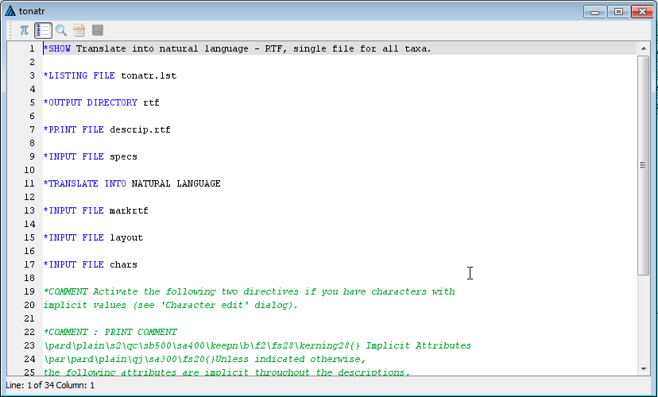
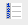
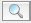
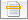
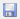

The Action Set Editor
The 'Action Set Editor' is a simple text editor designed to edit the contents of an action set.

Action Set Contents
The majority of the 'Action Set Editor' is used to display the contents of the action set. Directives are displayed
according to the following rules:
- Recognised directives are displayed in blue.
- Comments are displayed in green and in italics.
- Data passed to a directive is displayed in black.
In addition, hovering the mouse cursor over a recognised directive will display a tooltip window containing the
documentation for the directive.
The toolbar
- Show white space -
Toggles the display of end of line and tab characters in the editor.
-  Show line numbers -
Toggles the display of the line numbers in a column on the left of the editor.
-  Find / Replace -
Displays a dialog which provides find and replace functionality for the editor..
-  Go to line number -
Displays a dialog which will move the cursor to a (user specified) line in the file.
-  Save -
Saves changes made in the 'Action Set Editor' to the main DELTA data set. Before saving the changes,
the editor will attempt to validate the changes. The contents of the action set may also be reformatted at this time.
Please note that the save action must be performed using the toolbar icon, it is not available from the
main application menus.